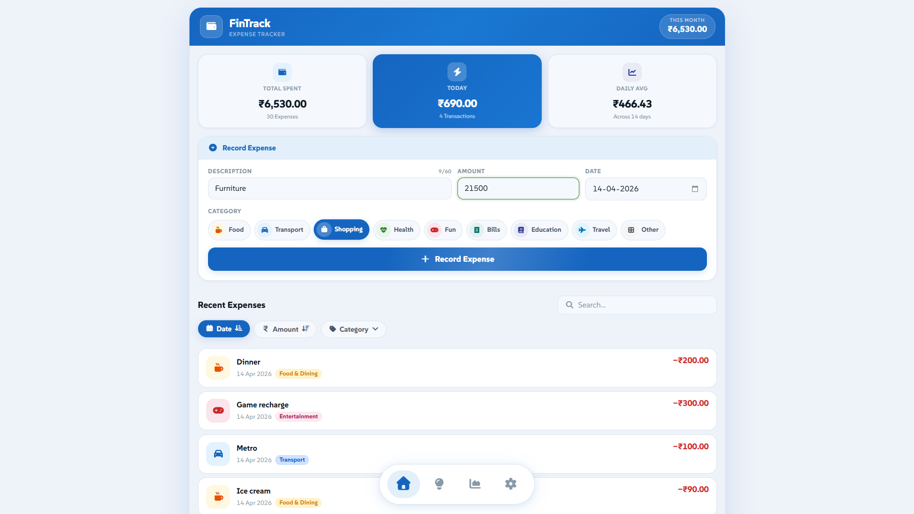

01 / WEB APP
LIVE · PWA

Personal finance · Privacy-first
FinTrack
A lightweight personal finance assistant for tracking expenses, understanding spending patterns, and managing financial data directly on your device. Used by people around the world. The hardest part to build was the filter and search.